Asset Matrix
Maximo HP Utilities includes matrix view for determing the distribution of assets based on scores and then take action to avoid imminent failures.
In this exercise the Reliability Engineer uses HP Utilities to:
- View Matrix for Criticality and End of life, Criticality and Risk, Criticality and Health
- View the drilled in assets list and take action
- Config Matrix version
Pre-requisites
This lab requires the following
- A working Maximo Application Suite (MAS) 8.8+ environment with Maximo Manage, or another Enterprise Asset Management (EAM) system, Maximo Health, Maximo Health and Predict – Utilities (HPU), and Maximo Optimizer installed
- Make sure the exercise Understand Health and Predict - Utilities Models is done, so that Sample ST(Substation Transformer) assets have the EOL/Risk/Health scores
- Members of the EUSCORING security group can configure settings for the matrix, such as which version of the matrix is the default version and the colors and placement of cells.
Please note that the MAS Worldwide (WW) demo environment is NOT a suitable environment for this lab. The WW demo environment is shared, and making ANY changes to that environment will impact other users’ ability to demonstrate MAS.
Introduction
This lab is intended to demonstrate the Matrix view capability in HPU which is another view added in MAS v8.8 to the existing Grid view, Map view, Charts View. It allows Reliability engineer to esaily idenfity the high risk assets from a matrix distribution view and take actions based on the distributions. Reliability engineer can also easily config the different matrix versions, like to change the default version, disable version, change the matrix cells' color(category) etc.
Navigate to Health and Predict - Utilities
Action:
-
Navigate to Health and Predict - Utilities (HPU). From the main MAS page, select the
Industry solutionstab.
-
Then click
Health and Predict – Utilitiesmenu.
View Matrix for Criticality and End of life, Criticality and Risk, Criticality and Health
Action:
1. From the asset grid view, click the Matrix icon, you will see the matrix, each cell contains the assets count which fall in the x-axis and y-axis range.
For example, the red cell in the top right corner shows the assets that End of Life is high and Criticality is also High which means high risks.
Besides cells, there are also several cards which is summarized count for the different categories of assets, normally High is for assets that need to take action in high priority.

- If there are too many assets in one cells or category, you can also use filter to reduce the counts. The followings are the detailed steps:
- click the filter icon, then select
Type - From the pop-up, find
Substation Transformers, select it, and pressOK. It may be necessary to use the search capability or scroll. -
Finally, press
Apply, the Matrix count -
The default matrix version is Criticality and End of life, you can also click the dropdown on the top right corner to change to other matrix versions.
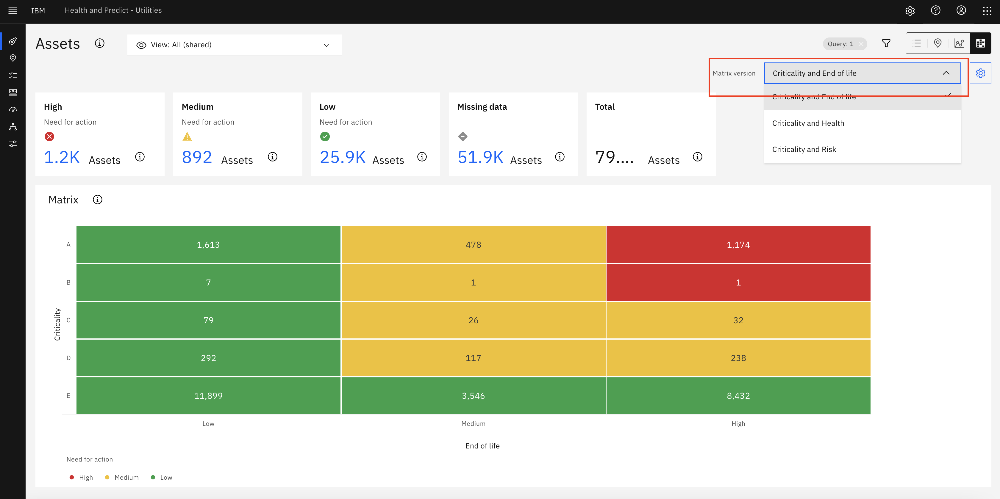
View the drilled in assets list for one distribution
Action:
1. Click any red cell of Matrix or 'High' need for action card with the blue text of number, you can see the detailed assets list.
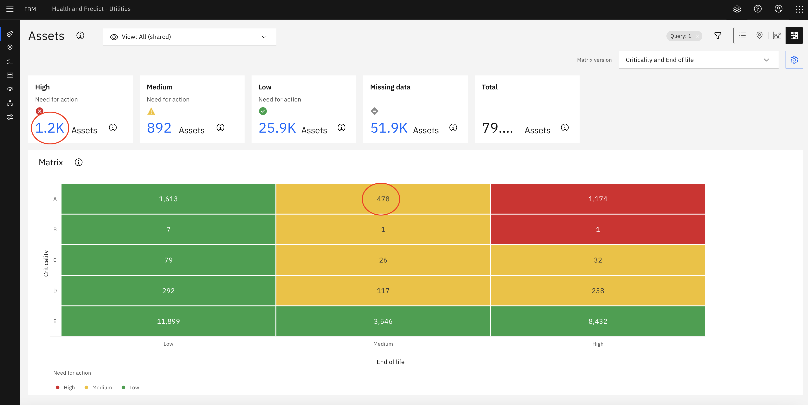
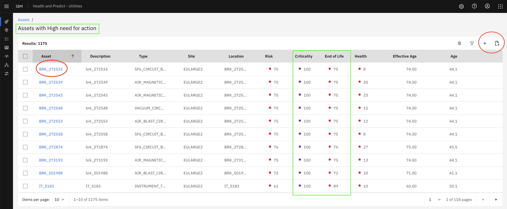
2. In the drill in page, you can filter out the interested assets list by click the filter icon.
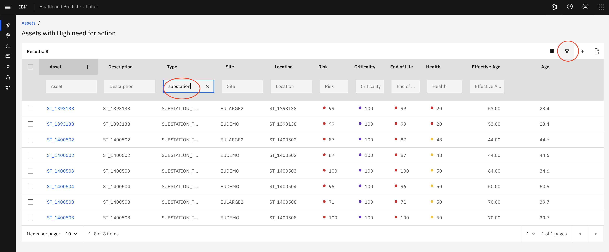
3. there are several actions that can be done in the drill in page:
- Click one asset name, and go into asset detail page, create Work order or Service request
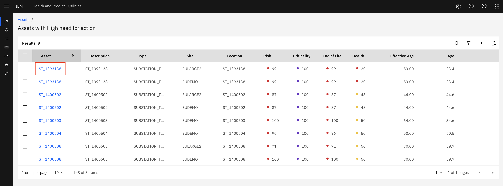
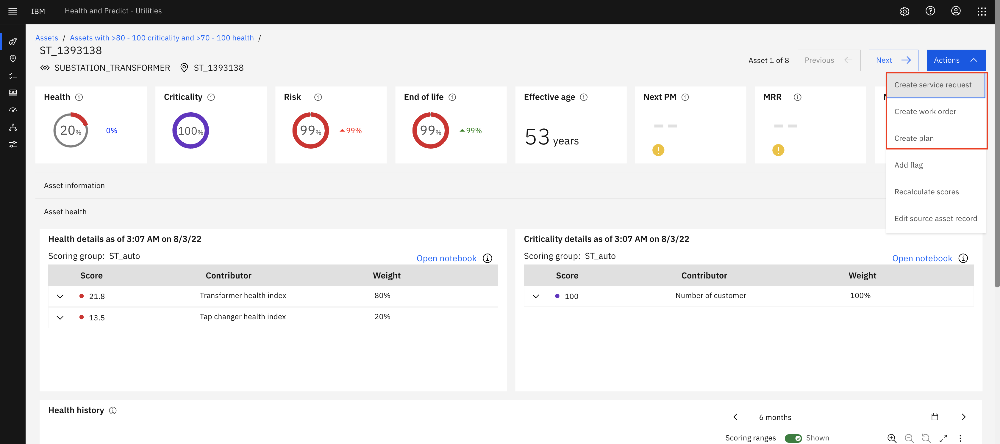
- Add all assets to Asset Investment optimizer project
- create a new project
- add to existing project
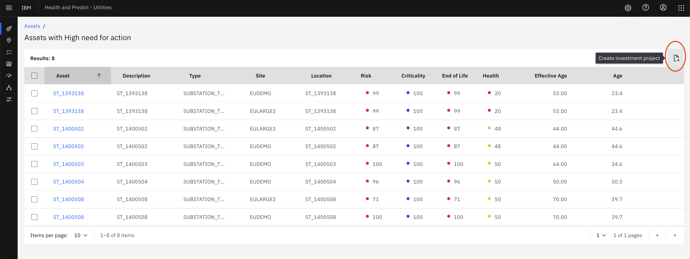
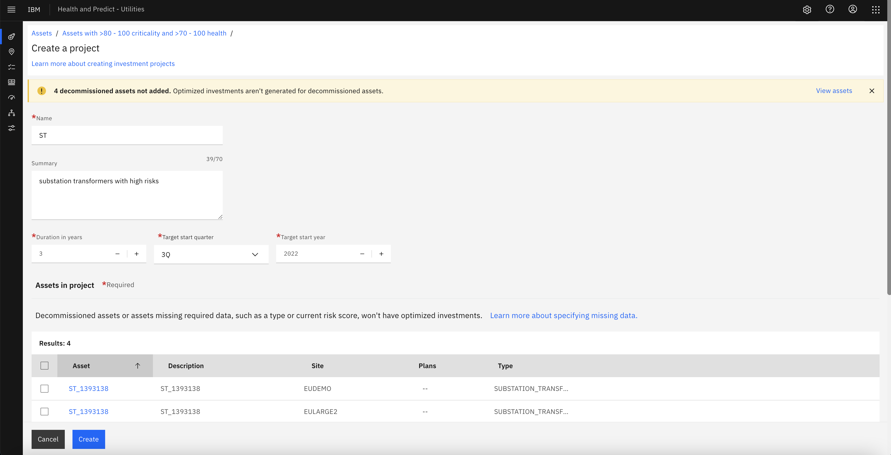
* please refer the Asset Investment Optimization for more details
- select some assets by clicking the checkbox and create AIO project
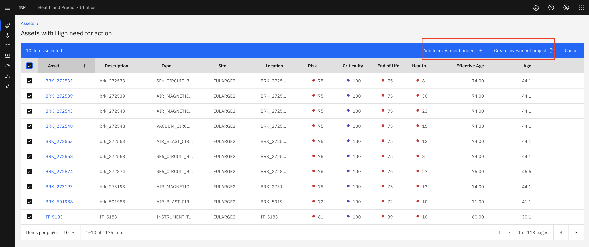
Config Matrix version
We have by default configuration(including the Matrix cell category color/default version etc) for matrix versions, but those configuration can also be customized per business requirements. By default, High End of life with Criticality A/B are marked as High risk assets with red color, but for a short/mid-term maintainence plan, we can also add a new Matrix cell category color 'Medium High' to pay attentions. For this execise, we will change the cell color.
Action:
1. Click the Config icon in the top right corner
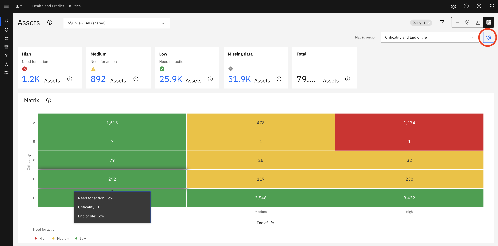

- Click the Edit button under the Categories section
- Click the Add button to add a new category 'Medium High' by input the name, color, icon and click the order icon to adjust the sequence. 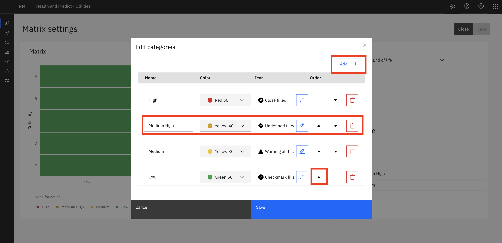
- Click the save button to save the changes
- Select the new added Matrix cell color category 'Medium High' and then click the cells that should be marked as the orange 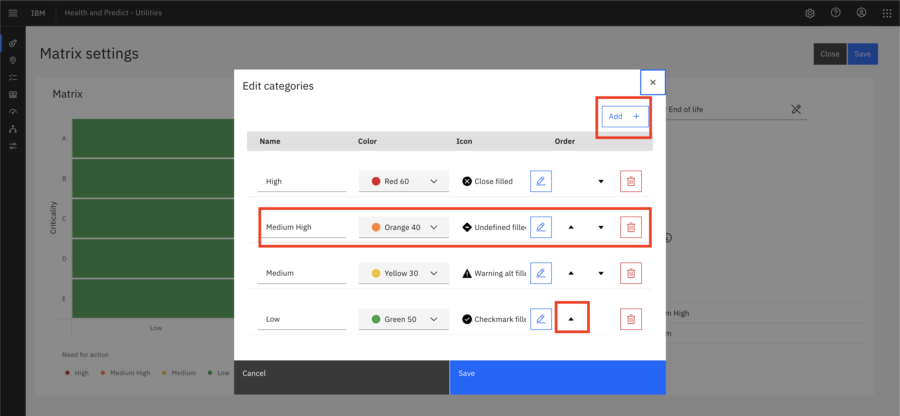 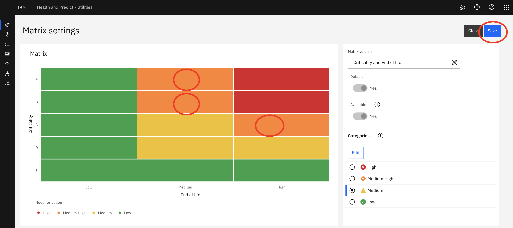
- Click the save button, and the new Matrix view is updated 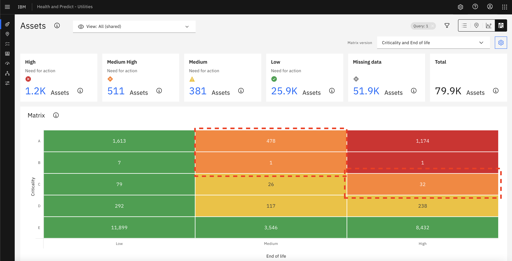
Congratulations. You now have identified at risk assets from the matrix view and take actions to improve their condition.